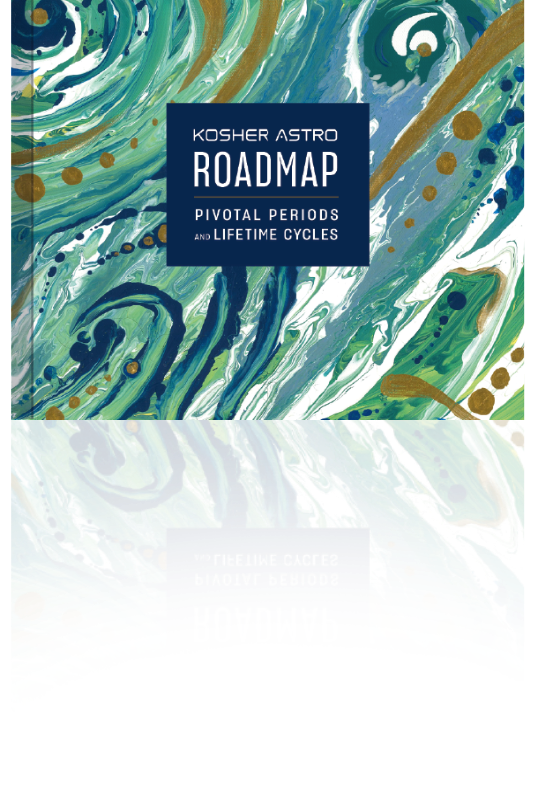

ROADMAP #1:
Pivotal Periods and Lifetime Cycles 26 Periods of Major Personal Growth
Pivotal Periods and Lifetime Cycles 26 Periods of Major Personal Growth
(Containing 40 specific dates in your life that can be life-changing!)


 The Seven Pivotal Periods
The Seven Pivotal Periods